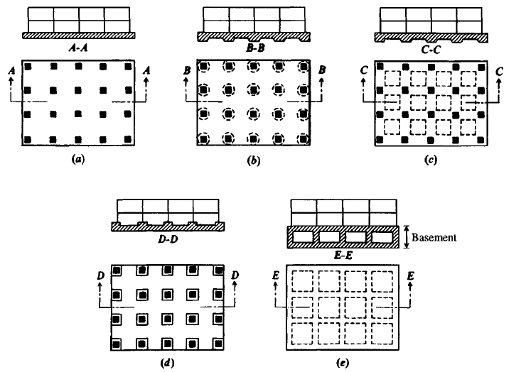
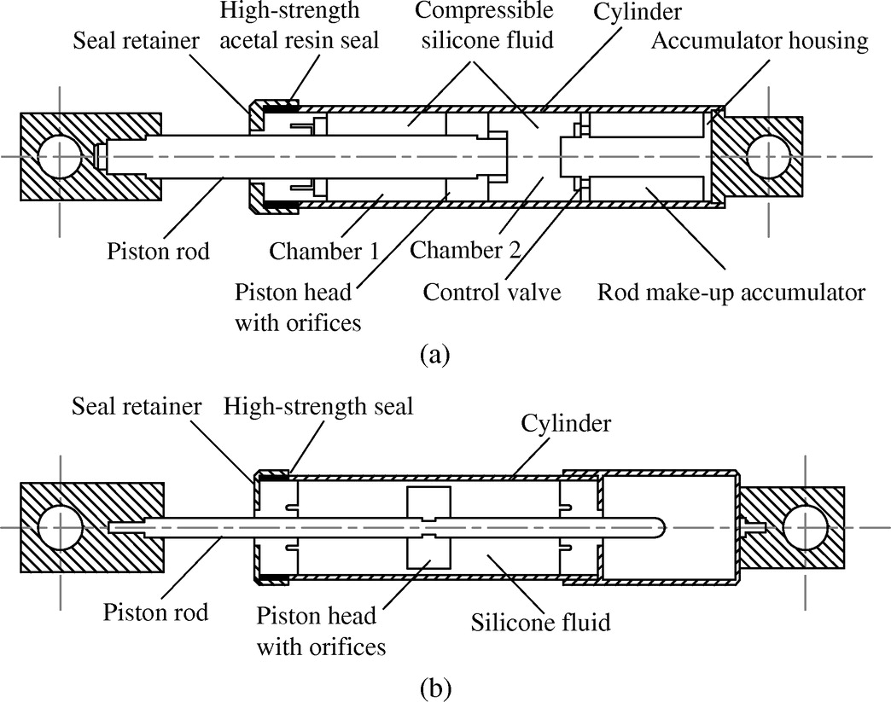

Geotechnics and Infrastructure refers to the interaction between the ground and any
structure that stand on it. It is a critical challenge involved in Civil Enineering, a
problem which is the main consideration regarding the constructions of buildings and
structures. These damages stretch from degrading soils to natural disasters.
The data and analysis collected are used to consistently construct and maintain safety
and reliable environment. Which comes with greater importance as it ties with public
safety and economic stability.
Analysis and discussion
The most common type of Geotechnical and Infrastructural damages is foundation failure.
Caused by deciding the wrong soil to use for development or even an adequate foundation design.
This leadings to structural instability resulting in unstable settle and even structural collapse.
Due to foundation failure being so inflicting towards a structure, it has become the first
consideration in terms of stability in any structural design. As the impact of the foundation
has been identified, developed foundations design have been made to solve these issues.
An example of this is Mat Foundation, spread flat around the ground with heavy supported columns
places in rows mainly in a square shape depicted in Fig. 1.The reason for the choice of design
is to help spread the load of the building. Regarding the weight and shape of the structure,
this foundation design is most suitable.

Another common type of infrastructural damage is soil erosion, this is a gradual process caused by
from wind and rain. Soil particles are stripped of the material resulting in a slow but effective
corrosion. Due to the reason is being exposed to hash wings and water, opens an issue for bridge
with design with contact to water. Since the process of soil erosion depends on the exposure of
the structure, the weighting of the damages varies vastly. A way to get around is problem is to
replantation, this includes vegetation with a covering of mulch. Mulch acts like an extra layer
of soil which even improves the fertility and health for the soil. Even though this isn’t a
permanent prevention, with maintenance the structural total life will be long and purposeful.
The big consideration regarding geotechnical damages is the impact of natural disasters, more
specifically earthquakes. Which are more prominent in certain countries. These incidents often have
an impactful effect on the economic growth. Either stunting or delaying the climb, relating back to
the mention of economic stability being tied into geotechnics and infrastructures. What is often
analysed after the shock of the disaster is where the highlighted parts of the building or structure
which is in a way vulnerable. A common way to reduce the impact of earthquakes is to apply shock
absorbers Fig. 2. They reduce the magnitude and frequency of the vibration caused the earthquake.
They do this by absorbing the kinetic energy caused from the vibrations and transfer the energy
into thermal energy. Which is then dissipated through a hydraulic fluid. This process is irreversible.
Another name for this reaction is damping. To maximise the effectiveness of the dampers, the engineers
designed to place dampers on every floor for buildings.

Study Case
An key study about Geotechnical and Infrastructural damage is the 2016 Kumamoto earthquake sequence.
The event resulted in 69 deaths and multiple infrastructural damages. Alongside the damages this
size, economical loss is inevitable. An estimated total loss of 24-46 billion US dollars. This has
been the greatest hit on the Kumamoto region with the previous earthquake having relatively less damage.
One geo-hazard that occurred was the fault movement, impact of the ground causing it to deform and effect
the structures depending on it. Crustal deformations reaching up to 2 meters resulting in severe damage
to both small homes and larger structures. Leading to liquefaction and settlement spread along rivers
and collecting in coastal areas.
As a result of the shock, landslides started to occur. First observed in the Minami Aso area, the landslide
mainly impacted infrastructures such as bridges and local trains being derailed. The ground movement of the
bridge lead to forces and bending movements being induced in the piles. The pilesbeing the main support for
a bridge, thick solid columns. As a result, there was major damage the pilesand the interior damages shown
in deep cracks. This greatly increased the risk of danger when using the purpose of the bridge resulting in
the viability and the public safety of the structure being not applicable. To avoid such damage delt on piles
on the bridge, a decision for a consideration for a new design was put in place. A bridge design that has a
very effective standing against earthquakes is a suspension bridge. Firstly the main from of the bridge is
build form steel, which is a relatively flexible metal. This is an ideal property due to the metal moving
with vibrations of the earth and absorbing the shock. Within the frame, another layer of absorption in forms
of dampers shown in Fig. 2.
Conclusion
This paper presented the multiple types of geotechnical and infrastructural damage. Throughout the research
into finding solutions to these problem, there has been many efficient and effective design that have successful
carried out its purpose. As supported by the annual number of death due to natural disasters having decreased
greatly. Structures are still effected by the types of damages therefore approach’s a risk. This is because the
balance between cost and value is rather quite unpredictable, due to the fact natural disasters are unpreventable.
Therefore damages caused from natural disasters still devastating and an issue.
References
Bhattacharya, S. et al. (2018) Geotechnical and infrastructural damage due to the 2016 Kumamoto earthquake sequence.
Soil dynamics and earthquake engineering (1984). [Online] 104390–394.
Huggins, T. J. et al. (2020) Infrastructural Aspects of Rain-Related Cascading Disasters: A Systematic Literature Review.
International journal of environmental research and public health. [Online] 17 (14), 5175–.
Li, Shuzhao et al. “Geotechnical Analysis of a Mat Foundation Supporting a Wellhead Platform.” Journal of geotechnical and
geoenvironmental engineering 147.11 (2021): n. pag. Web.
Naghshineh, Ali, Ashutosh Bagchi, and Fariborz M. Tehrani. “Seismic Resilience and Design Factors of Inline Seismic Friction
Dampers (ISFDs).” Eng (Basel, Switzerland) 4.3 (2023): 2015–2033. Web.
Scarpelli, G., Fruzzetti, V.M.E. and Ruggeri, P. (2022) 'The design of infrastructures in stiff jointed clay formations: A
step towards a geological-geotechnical integrated approach,' Engineering Geology, 304, p. 106681.
https://doi.org/10.1016/j.enggeo.2022.106681.
Conference Presentation: Geotechnical and Infrastructural Damages